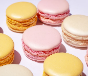

french macarons

by lila

A macaron is a sweet, meringue-based French sandwich cookie made from egg whites, almond flour, and sugar. It features a crisp outer shell, a moist and chewy interior, and a flavorful filling like ganache, buttercream, or jam. French macarons are naturally gluten-free by ingredients and come in many colors and flavors, making them popular for gifts, celebrations, weddings, parties, and everyday treats..